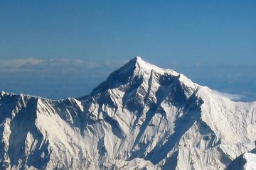

Горы
Горный туризм объединяет всё, что связано с передвижением по горной местности: от пеших прогулок до альпинизма. Высшая точка Земли - Джомолунгма (Эверест) на границе Непала и Китая. По результатам совместных измерений двух стран, объявленным в декабре 2020 года, её высота составляет 8848,86 м. Первое подтверждённое восхождение совершили Эдмунд Хиллари (Новая Зеландия) и Тенцинг Норгей (шерпа из Непала) 29 мая 1953 года. Гималаи - самая высокая горная система мира, она тянется примерно на 2400 км.
Раздел 1: Понятия и списки
Основные понятиянумерованный список
- Высотная поясность - закономерная смена климата и растительности по мере подъёма в горы.
- Акклиматизация - приспособление организма к новым условиям; в горах - к пониженному атмосферному давлению.
- Альпинизм - спорт восхождений на вершины, часто с использованием специального снаряжения.
- Трекинг - многодневный пеший поход по маршруту без технического лазания.
Подготовка к горному маршрутунумерованный список
- Выбрать маршрут по уровню физической подготовки
- Заранее тренировать выносливость
- Заложить в план дни на акклиматизацию
- Проверить прогноз погоды и состояние троп
- Сообщить близким маршрут и сроки
Особенности гор как направлениямаркированный список
- Высотная поясность: с высотой меняются климат и растительность
- Быстрые перемены погоды
- Выраженная сезонность маршрутов
- Пониженное давление: организму сложнее получать кислород
Крупные горные системы миравложенный список
- Азия
- Гималаи - Джомолунгма, 8848,86 м
- Тянь-Шань
- Европа
- Альпы - высшая точка Монблан, около 4800 м
- Кавказ - Эльбрус, 5642 м
- Америка
- Анды - самая протяжённая горная система суши, около 7000 км
- Аконкагуа - около 6960 м, высшая точка Америки
- Африка
- Килиманджаро - около 5900 м, высшая точка континента
Раздел 2: Фотографии

Горные хребты над облаками. Выше границы облачности воздух разрежён, а ультрафиолетовое излучение заметно сильнее.

Крупным планом: вершина и снежные склоны. Оледенение - главный фактор риска для восхождений.
Большие фотографии
Нажмите на миниатюру: фотография 600 на 400 пикселей откроется в новой вкладке.
 Открыть крупно Открыть крупно |
 Открыть крупно Открыть крупно |
 Открыть крупно Открыть крупно |
Раздел 3: Таблица фактов
| Фото | Объект | Ключевые данные | Ссылки |
|---|---|---|---|
 | Джомолунгма | 8848,86 м; граница Непала и Китая; первое подтверждённое восхождение - 29 мая 1953 года | Советы путешественнику Джомолунгма в Википедии |
| Монблан | Около 4800 м; высшая точка Альп, граница Франции и Италии | Страница о пустынях Монблан в Википедии |
| Эльбрус | 5642 м; высшая точка России и Кавказа | Страница о море Эльбрус в Википедии |
| Килиманджаро | Около 5900 м; высшая точка Африки, Танзания | Чек-лист поездки Килиманджаро в Википедии |